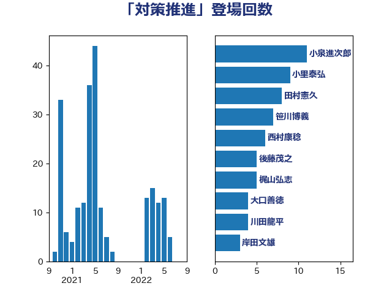

単語「対策推進」

| 小泉進次郎 | 自由民主党 | 11 回 |
| 小里泰弘 | 自由民主党 | 9 回 |
| 田村憲久 | 自由民主党 | 8 回 |
| 笹川博義 | 自由民主党 | 7 回 |
| 西村康稔 | 自由民主党 | 6 回 |
| 後藤茂之 | 自由民主党 | 5 回 |
| 梶山弘志 | 自由民主党 | 5 回 |
| 大口善徳 | 公明党 | 4 回 |
| 川田龍平 | 立憲民主党 | 4 回 |
| 岸田文雄 | 自由民主党 | 3 回 |
| 梅村聡 | 日本維新の会 | 3 回 |
| 田村智子 | 日本共産党 | 3 回 |
| 若宮健嗣 | 自由民主党 | 3 回 |
| 三浦信祐 | 公明党 | 2 回 |
| 丸川珠代 | 自由民主党 | 2 回 |
| 山下芳生 | 日本共産党 | 2 回 |
| 打越さく良 | 立憲民主党 | 2 回 |
| 沢田良 | 日本維新の会 | 2 回 |
| 源馬謙太郎 | 立憲民主党 | 2 回 |
| 牧山ひろえ | 立憲民主党 | 2 回 |
| 田名部匡代 | 立憲民主党 | 2 回 |
| 田村まみ | 国民民主党 | 2 回 |
| 石橋通宏 | 立憲民主党 | 2 回 |
| 美延映夫 | 日本維新の会 | 2 回 |
| 菅義偉 | 自由民主党 | 2 回 |
| 赤羽一嘉 | 公明党 | 2 回 |
| 阿部知子 | 立憲民主党 | 2 回 |
| あかま二郎 | 自由民主党 | 1 回 |
| 三浦靖 | 自由民主党 | 1 回 |
| 上田清司 | 国民民主党 | 1 回 |
| 中野洋昌 | 公明党 | 1 回 |
| 今井絵理子 | 自由民主党 | 1 回 |
| 伊藤孝恵 | 国民民主党 | 1 回 |
| 佐々木さやか | 公明党 | 1 回 |
| 務台俊介 | 自由民主党 | 1 回 |
| 坂本哲志 | 自由民主党 | 1 回 |
| 塩川鉄也 | 日本共産党 | 1 回 |
| 塩村あやか | 立憲民主党 | 1 回 |
| 宮内秀樹 | 自由民主党 | 1 回 |
| 宮路拓馬 | 自由民主党 | 1 回 |
| 小沼巧 | 立憲民主党 | 1 回 |
| 山下貴司 | 自由民主党 | 1 回 |
| 山口壯 | 自由民主党 | 1 回 |
| 山口那津男 | 公明党 | 1 回 |
| 山岸一生 | 立憲民主党 | 1 回 |
| 山添拓 | 日本共産党 | 1 回 |
| 岩渕友 | 日本共産党 | 1 回 |
| 岸真紀子 | 立憲民主党 | 1 回 |
| 平山佐知子 | 無所属 | 1 回 |
| 平沢勝栄 | 自由民主党 | 1 回 |
| 庄子賢一 | 公明党 | 1 回 |
| 後藤祐一 | 立憲民主党 | 1 回 |
| 斎藤アレックス | 国民民主党 | 1 回 |
| 東徹 | 日本維新の会 | 1 回 |
| 松木けんこう | 立憲民主党 | 1 回 |
| 根本匠 | 自由民主党 | 1 回 |
| 森本真治 | 立憲民主党 | 1 回 |
| 江島潔 | 自由民主党 | 1 回 |
| 浅野哲 | 国民民主党 | 1 回 |
| 深澤陽一 | 自由民主党 | 1 回 |
| 熊野正士 | 公明党 | 1 回 |
| 牧原秀樹 | 自由民主党 | 1 回 |
| 田嶋要 | 立憲民主党 | 1 回 |
| 田村貴昭 | 日本共産党 | 1 回 |
| 石井章 | 日本維新の会 | 1 回 |
| 自見はなこ | 自由民主党 | 1 回 |
| 芳賀道也 | 国民民主党 | 1 回 |
| 西村智奈美 | 立憲民主党 | 1 回 |
| 谷合正明 | 公明党 | 1 回 |
| 足立康史 | 日本維新の会 | 1 回 |
| 近藤昭一 | 立憲民主党 | 1 回 |
| 長浜博行 | 無所属 | 1 回 |
| 高階恵美子 | 自由民主党 | 1 回 |